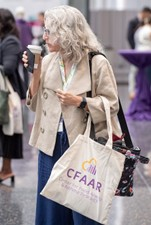

Logo
Comfort Kits for Children
with Food Allergies
Evidence-based mind-body tools to help children manage the anxiety, stress, and emotional burden of living with a food allergy.
Evidence-based mind-body tools to help children manage the anxiety, stress, and emotional burden of living with a food allergy.
Food allergies are a chronic health condition that often stays out of sight — until a reaction occurs. Yet day-to-day food allergy management places a continuous emotional and practical burden on children, teens, and their families.
The emotional impact can take many forms: worry and anxiety, fear, hypervigilance that alters routines, and sadness or frustration that can diminish overall well-being. Sometimes these reactions are temporary and manageable. But they can also become persistent, interfere with daily functioning, and impact healthy development.
Children's thoughts, emotions, and physical responses are closely linked. Anxiety can heighten physical sensations, and physical symptoms can, in turn, amplify worry. Helping children understand and work with this connection allows them to feel more in control of their bodies and their experiences.
Families managing food allergies must navigate cultural and social experiences, particularly around food-centered gatherings and traditions. My approach helps families strengthen stress management skills, build cognitive flexibility, and foster a sense of connection and belonging — so that children don't just get through, but truly thrive.

Every kit includes six core mind-body activities — the same techniques used in clinical work with children managing anxiety and chronic health conditions — plus three activities designed specifically for food allergy stress. Teal numbers are core activities; gold are food allergy–specific.
Belly breathing with a finger puppet teaches children to notice the mind-body connection, reducing anxiety before high-stress situations like a new restaurant or birthday party.
"Catch the Relaxation Wave" helps children release physical tension that builds with food-related anxiety, calming the body's fight-or-flight response.
Calming self-talk phrases that address distorted or "sticky" thoughts, building cognitive flexibility and confidence in real-world situations.
Guided imagery to a happy, safe place — a powerful tool for shifting attention away from discomfort or worry, especially useful during medical appointments or after a reaction.
Journaling and drawing give children a safe outlet to process feelings of being "different" or isolated because of their dietary restrictions.
Movement and yoga poses help children discharge stress in the body, making it easier to return to calm after anxious moments.
Consistent patterns around meal prep and outings help build confidence and decrease the mental load of constant allergy vigilance.
Track acts of courage — asking about ingredients, trying a new safe food — to reframe the food allergy experience and build a sense of agency.
A visual bravery tracker that helps rewire anxious thinking by making courageous moments tangible and visible over time.
Every kit includes carefully selected physical items that support the 9 Mind-Body Comfort Activities, plus a QR code linking to audio guidance for caregivers and children.
These activities are designed for the specific moments when food allergy anxiety typically peaks.
Food allergy anxiety is valid, common, and very treatable. Here's how caregivers can get the most from the kit.
Children living with food allergies face real and ongoing psychological stress: fear of exposure, social isolation, and anticipatory anxiety around every meal. These kits equip them with 9 evidence-based mind-body activities they can use independently, at any age, in any setting.
Recommend to patients managing pre/post-reaction anxiety, fear of accidental exposure, high anxiety at mealtimes, coping during OIT dosing and oral food challenges, sleep difficulties, and social isolation. To refer a patient or learn more, contact Dr. Lombard at lisalombardphd@gmail.com or 708-655-0063.
Reach out to discuss whether Comfort Kits for Food Allergies is a good fit for your family.
This program is offered through Dr. Lombard's private practice, in partnership with Comfort Kits for Children®.